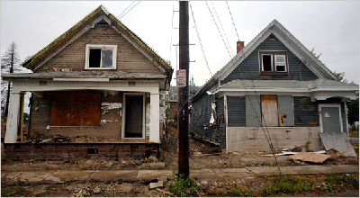

Fun Facts About Buffalo
Did you know?
- Buffalo is top 10 in crime rate per 100,000 residents?
- Buffalo Bill in "Silence of the Lambs" was named after the same guy the Buffalo Bills were?
- The Buffalo Bills haven't made the playoffs since Bill Clinton was in office?
- Tom Brady and his dad hate the hotels in Buffalo?
- OJ Simpson actually is innocent and just conveniently cut himself and got blood everywhere the same day as the murder?
- Buffalo is known as "a drinking town with a sports problem"?
- The sentence "Buffalo buffalo Buffalo buffalo buffalo buffalo Buffalo buffalo" is grammatically correct?
- The population of homeless is higher than the population of those with homes?
- That the last fact is false but you wouldn't know it walking through the city?
- Buffalo recorded a record high 10 heroin overdoses in the first 10 days of March?
- Most of the suburbs of Buffalo have impossible to pronounce Native American inspired names?
- People argue whether Anchor Bar or Duffs has better wings despite Duffs being far superior?
- Despite all of these, Buffalonians are unequivocally proud of their city?
